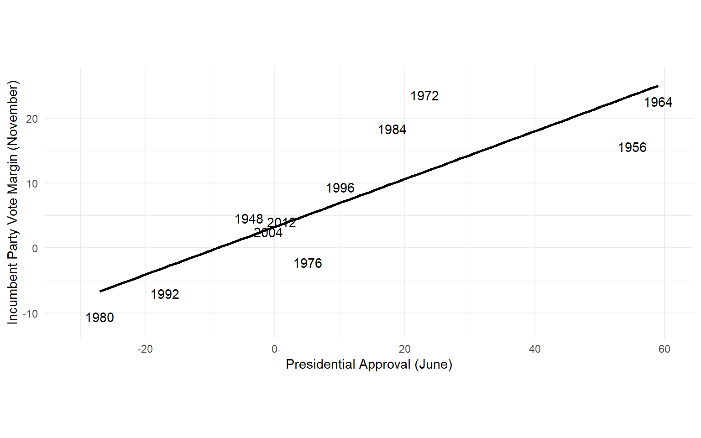
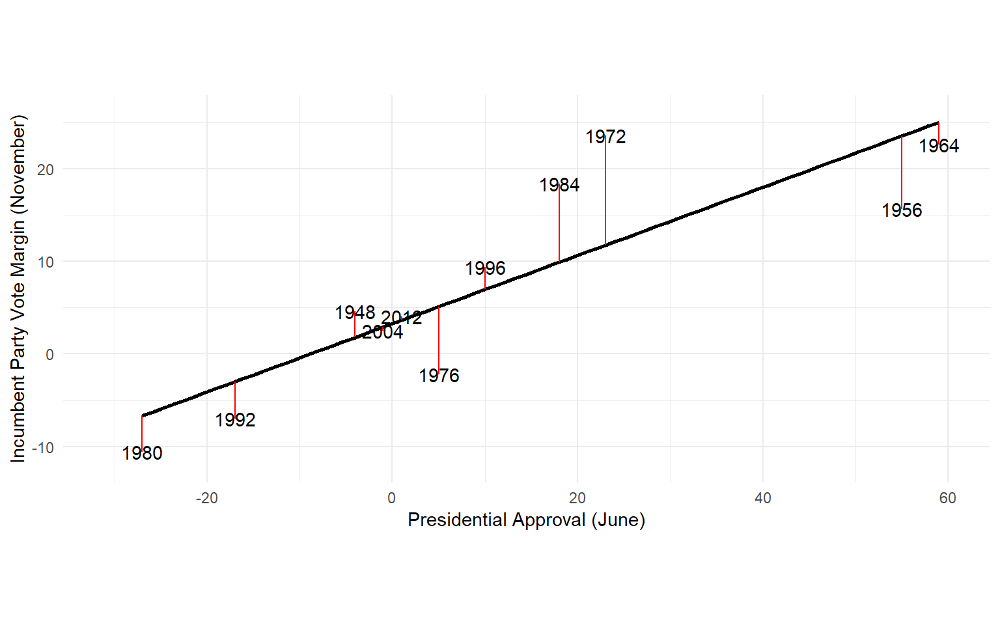

Linear Models
POLS 3220: How to Predict the Future
Looking Ahead
Over the next three weeks, we’ll study the fundamentals of machine learning.
Today linear models. Simple models can get you a long way!
Presidential Elections

Presidential Election Forecast
- “Line of Best Fit”. What is it? We’ll use a familiar strategy. The “best” model is the one that minimizes the average squared error.
Presidential Approval
Presidential Approval

Adding Multiple Predictors
Why were the errors for 1972 and 1984 so large?
Plane of best fit
Plane of Best Fit
Threee Dangers
When using a linear model, keep in mind three dangers that could ruin your predictions:
Nonlinearity
Extrapolation
Overfitting
Danger 1: Nonlinearity
The linear model faithfully gives you the line of best fit…
[1] "hello"…even when a straight line is a bad model.
- Diagnostic: Look at a chart! Are there patterns in the errors?
Danger 2: Extrapolation
Danger 3: Structural Breaks
Predicting with a linear model assumes that the relationships observed in your data will be stable over time.
In other words, you’re assuming that the future will follow the same rules as the past.